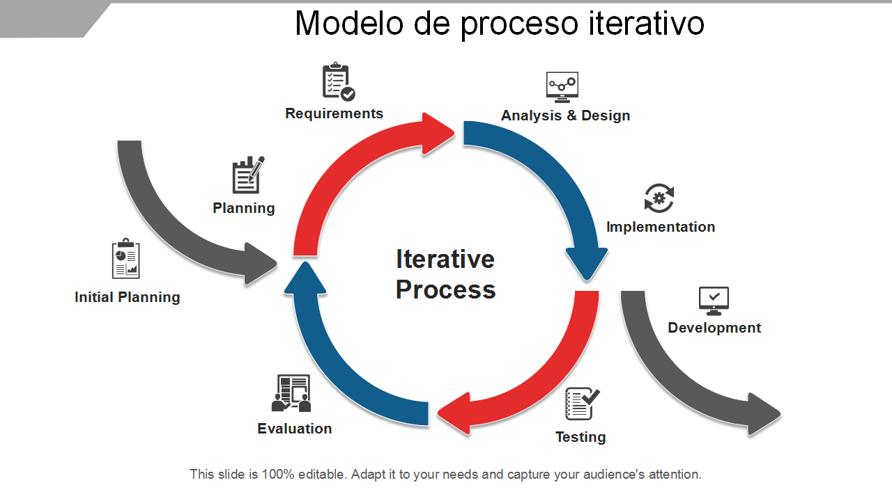

En el campo de la ética, los principios son un conjunto de normas generales y universales que guían las acciones y la conducta, dentro de un marco moral, cultural y social determinado. La mayoría de las doctrinas, religiones y códigos de conducta se basan en principios sólidos. Estos fundamentan y estructuran un sistema de valores que definen un modo de estar y actuar en la vida cotidiana. Se llaman “principios” porque se encuentran en el origen de toda estructura moral o social. Son preceptos fundamentales considerados beneficiosos no solo para el individuo, sino para la comunidad y la humanidad en general.
Paleta de coloresTodo lo que hace la organización debe generar valor, directa o indirectamente, para sus grupos de interés. Por lo tanto, es importante que la organización comprenda claramente quiénes son sus grupos de interés. También es fundamental que la organización comprenda qué es lo que realmente valora el consumidor del servicio. Esto es algo que cambia con el tiempo y las circunstancias. Por último, pero no menos importante, la organización necesita comprender la experiencia del cliente, ya sea subjetiva u objetiva, para ofrecer el mejor servicio.
Go somewhere
La provisión de servicio (o prestación de servicios) es un acuerdo comercial donde una parte ofrece un servicio a otra a cambio de dinero. A diferencia de la venta de bienes físicos, es una acción o tarea (como consultoría, transporte o mantenimiento) y su valor puede tener un impacto contable variable antes de la facturación.
Go somewhereEl consumo de servicio es el acto de utilizar una actividad económica intangible (como internet, agua, luz, consultoría o transporte) para satisfacer una necesidad. El modelo "Consumo como Servicio" permite pagar por lo que realmente se usa, sin necesidad de ser dueño o mantener el equipo (ej. plataformas digitales).Dependiendo de tu ubicación en Naucalpan de Juárez (Edo. de México), existen diferentes normativas y herramientas para gestionar el consumo de tus servicios
Go somewhereLa gestión de relaciones de servicio (a menudo impulsada por sistemas CRM) es el proceso mediante el cual una empresa administra sus interacciones con clientes actuales y potenciales. Su objetivo principal es optimizar la atención, anticipar necesidades y construir relaciones a largo plazo para impulsar el crecimiento y la lealtad.
Go somewherePara ofrecer el mejor servicio, es fundamental que todo esté interconectado. Ningún servicio, práctica, proceso, departamento o proveedor funciona de forma aislada. Todas las actividades deben estar alineadas con el mismo objetivo: generar valor. Esto se logra mediante una comunicación clara, la automatización y una visión precisa de los patrones.
Go somewhereEste principio rector tiene como objetivo evitar complicaciones innecesarias. Para ello, es preciso definir excepciones y establecer reglas. Otra actividad consiste en evaluar qué conservar, lo cual se logra formulando la siguiente pregunta: "¿Esta práctica, proceso o servicio realmente contribuye a la creación de valor?". Para simplificar las cosas, a veces es mejor hacer menos, pero hacerlas mejor. ¡Al final, la simplicidad es la máxima sofisticación!.
Go somewhereEste principio se implementa para garantizar que se priorice la maximización del valor del trabajo realizado tanto por recursos humanos como técnicos. La automatización facilita las tareas frecuentes y repetitivas, liberando así recursos humanos. Estos recursos humanos pueden entonces dedicarse a tareas más complejas que aporten valor. Es importante que la automatización no se realice por el mero hecho de automatizar. Debe quedar claro de antemano cómo la automatización contribuirá a que la organización en su conjunto aumente su valor.
Go somewhereLos siete principios guía de ITIL no funcionan de forma aislada, sino como una red interconectada. Trabajan en conjunto para orientar la toma de decisiones y la cultura organizacional, asegurando que cualquier iniciativa de TI genere valor real, sea adaptable y promueva la mejora continua. El objetivo central: Todo este ecosistema de principios gira en torno a enfocarse en el valor. Los demás principios apoyan directamente este propósito, especialmente al optimizar y automatizar las tareas repetitivas para reducir costos y aumentar la velocidad de entrega.
Go somewhereNo tienes que elegir uno solo; los 7 principios rectores de ITIL no son reglas aisladas, sino recomendaciones que deben combinarse según el contexto y el desafío de tu empresa Si tu duda es: "¿Esto realmente beneficia a la empresa?"Aplica: Enfócate en el valor. Cada decisión debe estar orientada a generar resultados positivos y valor real para tu cliente o usuario final.Si tu duda es: "¿Por dónde empiezo un proyecto si no sé qué hacer?"Aplica: Empieza donde estás. Analiza, evalúa y utiliza lo que ya tienes (recursos, procesos o personas) antes de pensar en crear algo desde cero.Si tu duda es: "¿Cómo evito abrumar a mi equipo con un proyecto enorme?"Aplica: Progresa iterativamente con retroalimentación. Divide el trabajo grande en fases más pequeñas y manejables, evaluando el resultado de cada una.
Go somewhereSon directrices o recomendaciones universales que sirven como brújula para las organizaciones. En lugar de imponer un enfoque "talla única", están diseñados para ser flexibles y adaptarse a la realidad, cultura y objetivos de cada empresa. Adaptabilidad: Permiten a las compañías adoptar ITIL de forma completa o parcial según sus capacidades.Guía en la incertidumbre: Ayudan a tomar decisiones sin importar cómo cambien las estrategias u objetivos de la empresa.Enfoque en el sentido común: Priorizan la sencillez y el valor entregado sobre el cumplimiento ciego de los procesos.
Go somewhere